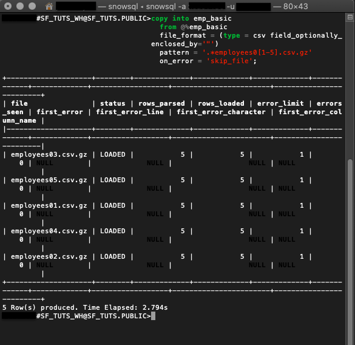
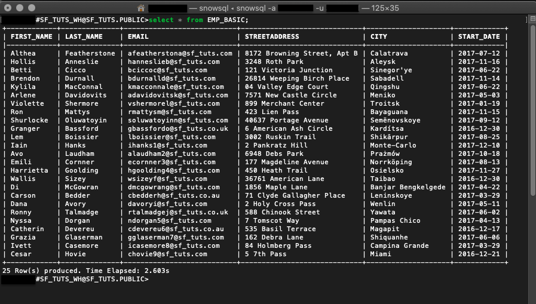
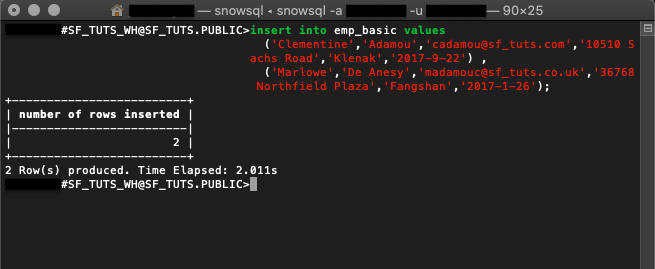

SnowSQL is the software CLI tool used to interact with Snowflake. Using SnowSQL, you can control all aspects of your Snowflake Data Cloud, including uploading data, querying data, changing data, and deleting data. This guide will review SnowSQL and use it to create a database, load data, and learn helpful commands to manage your tables and data directly from your CLI.
Prerequisites
- Quick Video Introduction to Snowflake
- Snowflake Data Loading Basics Video
What You'll Learn
- how to create a Snowflake account
- how to install SnowSQL locally
- how to set up a cloud database and table
- how to create a virtual warehouse
- how to migrate sample data to the cloud
- how to query cloud data
- how to insert additional data
- how to drop database objects and close SnowSQL connection
Be sure to check the needed computing requirements before beginning. Also, download the sample files to complete this tutorial and note the folder location for later use.
What You'll Need
- Local Browser and OS Requirements
- Download the Sample Data Files
What You'll Build
- A connection to cloud host and manage data with SnowSQL.
Create a Snowflake Account
Snowflake lets you try out their services for free with a trial account.
Access Snowflake's Web Console
https://
Log in to the web interface on your browser. The URL contains your account name and potentially the region.
Increase Your Account Permission
The Snowflake web interface has a lot to offer, but for now, we'll just switch the account role from the default SYSADMIN to ACCOUNTADMIN. This increase in permissions will allow the user account to create objects.

Download the SnowSQL Installer
SnowSQL can be downloaded and installed on Linux, Windows, or Mac. In this example, we'll download the installer for macOS via the AWS endpoint. If you're using a different OS or prefer other methods, check out all the ways to get SnowSQL here.
curl -O https://sfc-repo.snowflakecomputing.com/snowsql/bootstrap/<bootstrap-version>/darwin_x86_4/snowsql-<snowsql-version>-darwin_x86_64.pkg
Specify and
The example below is a cURL command to the AWS endpoint for a macOS to download the bootstrap version 1.2 and SnowSQL version 1.2.9.
curl -O https://sfc-repo.snowflakecomputing.com/snowsql/bootstrap/1.2/darwin_x86_64/snowsql-1.2.9-darwin_x86_64.pkg

Install SnowSQL Locally
- Double-click the installer file and walk through the wizard prompts.
- Confirm the install was successful by checking the version
$ snowsql -v. - Reboot your machine and check again if necessary.
After completing these steps, you'll be ready to use SnowSQL to make a database in the next section.
Sign in From the Terminal
snowsql -a <account-name> -u <username>
The -a flag represents the Snowflake account, and the -u represents the username.
Create a Database and Schema
create or replace database sf_tuts;
The command create or replace database makes a new database and auto-creates the schema ‘public.' It'll also make the new database active for your current session.
To check which database is in use for your current session, execute:
select current_database(),
current_schema();
Generate a Table
create or replace table emp_basic ( first_name string , last_name string , email string , streetaddress string , city string , start_date date );
Running create or replace table will build a new table based on the parameters specified. This example reflects the same columns in the sample CSV employee data files.

Make a Virtual Warehouse
create or replace warehouse sf_tuts_wh with warehouse_size='X-SMALL' auto_suspend = 180 auto_resume = true initially_suspended=true;
After creation, this virtual warehouse will be active for your current session and begin running once the computing resources are needed.

With the database objects ready, you'll employ SnowSQL to move the sample data onto the emp_basic table.
If you have not already done so, you can download the sample files here:
Stage Files With PUT
Linux
put file:///tmp/employees0*.csv @<database-name>.<schema-name>.%<table-name>;
Windows
put file://c:\temp\employees0*.csv @sf_tuts.public.%emp_basic;
filespecifies the local file path of the files to be staged. File paths are OS-specific.@is the specific database, schema, and table the staged files are headed.. .% - The
@sign before the database and schema name@sf_tuts.publicindicates that the files are being uploaded to an internal stage, rather than an external stage. The%sign before the table name%emp_basicindicates that the internal stage being used is the stage for the table. For more details about stages, see Staging Data Files from a Local File System.
put file:///tmp/employees0*.csv @sf_tuts.public.%emp_basic;
Here is a PUT call to stage the sample employee CSV files from a macOS file:///tmp/ folder onto the emp_basic table within the sf_tuts database.

LIST Staged Files
list @<database-name>.<schema-name>.%<table-name>;
To check your staged files, run the list command.
list @sf_tuts.public.%emp_basic;
The example command above is to output the staged files for the emp_basic table. Learn more LIST syntax here.

COPY INTO Your Table
copy into emp_basic
from @%emp_basic
file_format = (type = csv field_optionally_enclosed_by='"')
pattern = '.*employees0[1-5].csv.gz'
on_error = 'skip_file';
After getting the files staged, the data is copied into the emp_basic table. This DML command also auto-resumes the virtual warehouse made earlier.

The output indicates if the data was successfully copied and records any errors.
With your data in the cloud, you need to know how to query it. We'll go over a few calls that will put your data on speed-dial.
- The
selectcommand followed by the wildcard*returns all rows and columns in
select * from emp_basic;
Here is an example command to select everything on the emp_basic table.

Sifting through everything on your table may not be the best use of your time. Getting specific results are simple, with a few functions and some query syntax.
- WHERE is an additional clause you can add to your select query.
select * from emp_basic where first_name = 'Ron';
This query returns a list of employees by the first_name of ‘Ron' from the emp_basic table.

- LIKE function supports wildcard
%and_.
select email from emp_basic where email like '%.au';
The like function checks all emails in the emp_basic table for au and returns a record.

Snowflake supports many functions, operators, and commands. However, if you need more specific tasks performed, consider setting up an external function.
Often data isn't static. We'll review a few common ways to maintain your cloud database.
If HR updated the CSV file after hiring another employee, downloading, staging, and copying the whole CSV would be tedious. Instead, simply insert the new employee information into the targeted table.
Insert Data
INSERT will update a table with additional values.
insert into emp_basic values
('Clementine','Adamou','cadamou@sf_tuts.com','10510 Sachs Road','Klenak','2017-9-22') ,
('Marlowe','De Anesy','madamouc@sf_tuts.co.uk','36768 Northfield Plaza','Fangshan','2017-1-26');
Drop Objects
In the command displayed, insert is used to add two new employees to the emp_basic table.

- DROP objects no longer in use.
drop database if exists sf_tuts;
drop warehouse if exists sf_tuts_wh;
After practicing the basics covered in this tutorial, you'll no longer need the sf-tuts database and warehouse. To remove them altogether, use the drop command.
- Close Your Connection with
!exitor!disconnect
For security reasons, it's best not to leave your terminal connection open unnecessarily. Once you're ready to close your SnowSQL connection, simply enter !exit.
Use SnowSQL for Your Application
You've created a Snowflake account, set up a cloud database with compute resources, and migrated data to the cloud with SnowSQL. Nice work! There are many advantages to using the cloud. Now that you know how easy getting started with Snowflake is, it's time to consider your next steps.
With your firm grasp of loading data with SnowSQL, start using it to run your application. Continue by developing an application with SnowSQL to learn how to connect your data to a Python application. If you already have application data, consider migrating it to the cloud with the same steps we used to complete the emp_basic table. Snowflake's tools and documentation are extensive and give you the power of cloud computing.
What we've covered
- SnowSQL setup
- Uploading data using SnowSQL
- Querying data using SnowSQL
- Managing and deleting data using SnowSQL